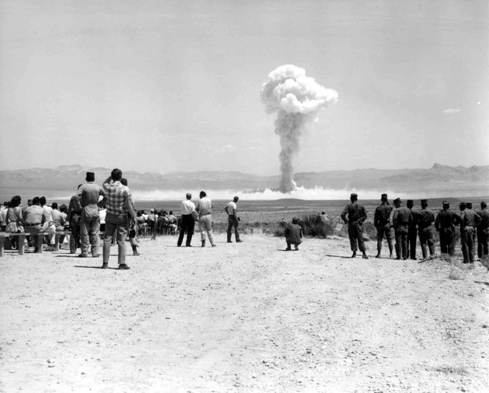
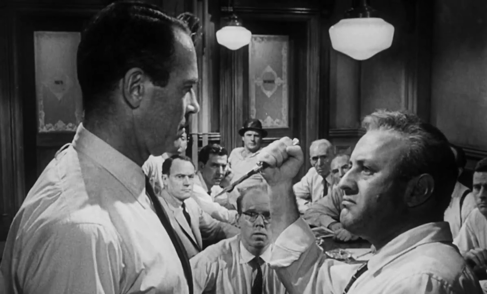

Connection to The Pedestrian (Ray Bradbury)
Both of the pieces represent the ways in which totalitarian societies control their citizens through forced compliance. In Bradbury’s short story, Leonard Mead was arrested simply for being outside and showing individualism; in Atwood’s work, Offred exists within a society where one misplaced look or verbal error can result in death. Both Offred and Leonard are essentially isolated minds existing inside of very highly surveilled and intellectually oppressive environments.
Connection to "Eve of Destruction" (Song by P.F. Sloan)
The lyrics to the song convey the threat of catastrophic social collapse that parallels the time period “before” in Atwood’s The Handmaid’s Tale. All of the fears of nuclear war and environmental devastation as well as the political extremes that exist today are also present in the Colonies of Gilead. These extreme conditions were created by the Sons of Jacob who took advantage of them as an opportunity to brutally overthrow the current government in order to establish a new regime with total authority and complete destruction of all remaining democracy in Gilead.

Connection to 12 Angry Men (Film)
Unlike this film, which portrays the importance of maintaining a functioning democratic system, just systems and standing up for your values even if you are opposed by the majority (Juror #8), The Handmaid’s Tale demonstrates what occurs once such systems have been completely dismantled. As a direct result of destroying all forms of justice, Gilead has developed into a totalitarian society without juries, debates, and/or presumptions of innocence — only state sanctioned violence (as seen in the Particicution).

References:
Atwood, Margaret. The Handmaid's Tale. Random House, 1986
photos references:
Ureña, Josue. "Silhouette of Man Walking on Street." Pexels, 2023, www.pexels.com/photo/silhouette-of-man-walking-on-street-18063890/. Accessed 02 May 2026.
United States Department of Energy. "Small Boy Nuclear Test 1962." Wikimedia Commons, 1962, commons.wikimedia.org/wiki/File:Small_Boy_nuclear_test_1962.jpg. Accessed 02 May 2026.
United Artists. "12 Angry Men Trailer Screenshot." Wikimedia Commons, 1957, commons.wikimedia.org/wiki/File:12_Angry_Men_trailer_screenshot_%282%29.jpg. Accessed 02 May 2026.